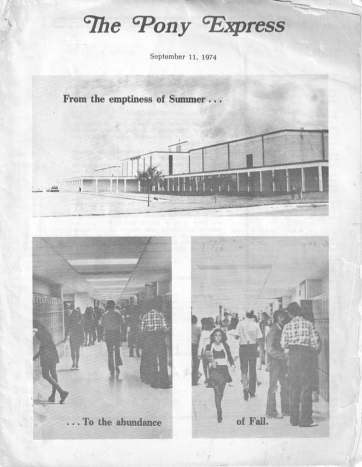
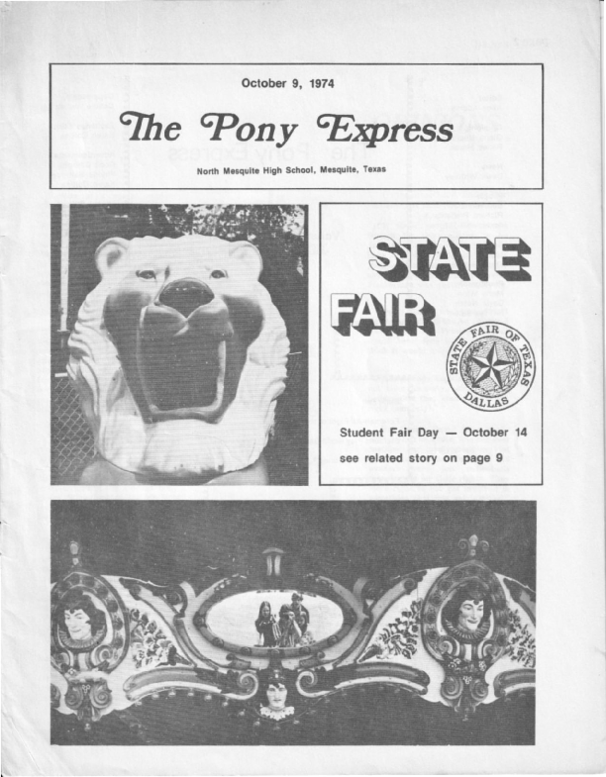
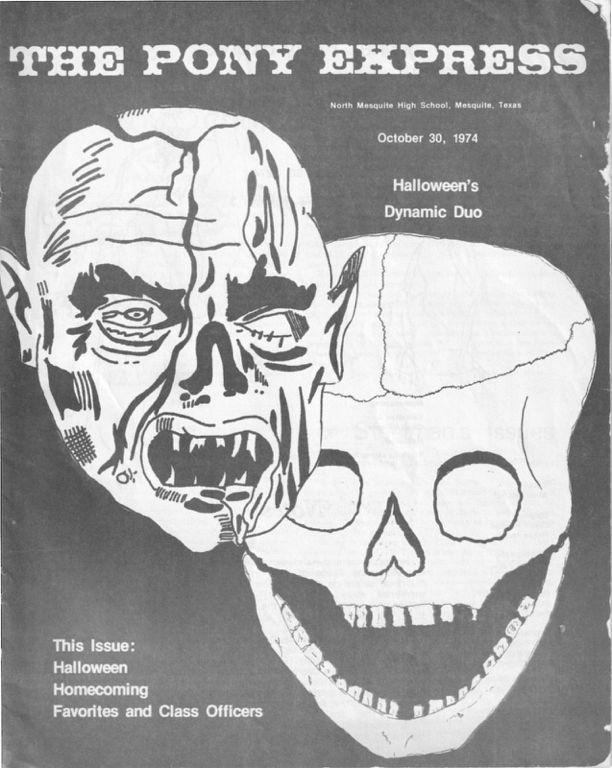
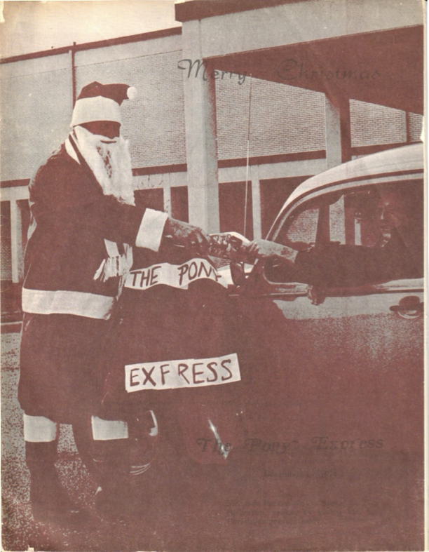
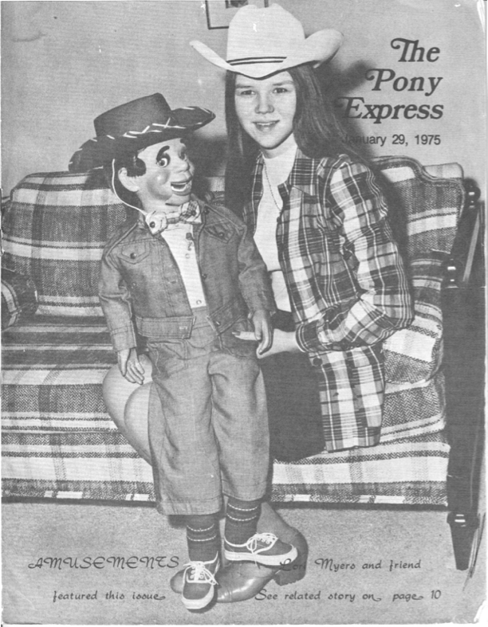
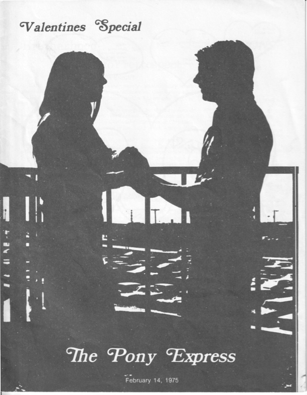
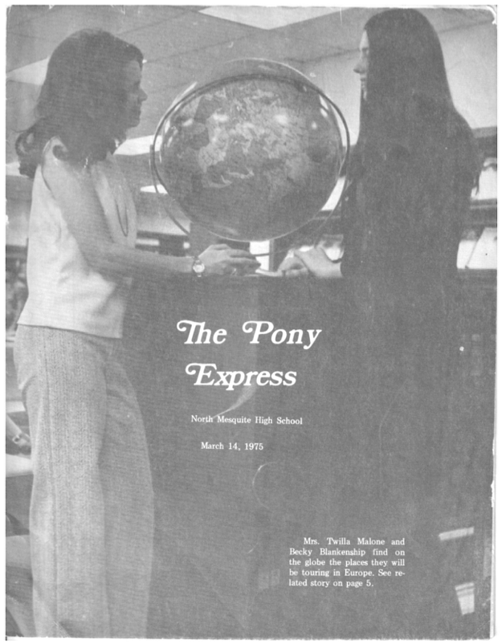
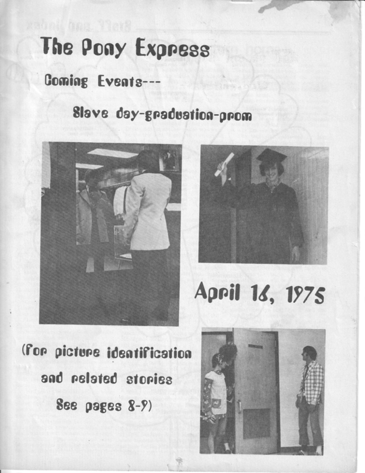

About This Archive
This site preserves issues of The Pony Express from the 1974–1975 school year. Each issue has been scanned and processed with OCR to make the text searchable within the PDF.
Click any cover in the carousel below to open the full issue in the viewer.
Tap any cover in the carousel below to open the full issue in a new tab.
Note: The scan quality of these issues is limited by the physical condition of the original newspapers, which in some cases is not great. This also impacts the quality of the optical character recognition (OCR), so text searches may not always pick up text that is visible on the page.
Mobile tip: PDFs open in your browser's native viewer. Use your device's share menu to save or share issues.
Archive Catalog
Looking for a specific person, article, or section? Access the complete searchable index for all issues.
Note: The searchable catalog is optimized for desktop viewing. On mobile, browse issues using the carousel below, then use your browser's built-in PDF search.
Archive Carousel
Archive under development — additional issues will be added as they become available.
- Use the left/right arrows to browse covers
- Click any cover to open the PDF viewer below
- Use the searchable catalog above to find specific articles and jump to pages
- Use Ctrl+F (or Cmd+F on Mac) inside the PDF to search by name or topic
- Click "Share" in the viewer to copy a link to a specific issue
- Swipe left/right to browse covers
- Tap any cover to open the PDF in a new tab
- Use your browser's search feature within the PDF to find names or topics
- Use your browsers share feature when viewing the PDF to share a specific issue

September 11, 1974

October 9, 1974

October 30, 1974

December 15, 1974

January 29, 1975

February 14, 1975

March 14, 1975

April 16, 1975
Have Issues to Contribute?
While this archive currently focuses on the 1974–1975 school year, we are open to expanding it to include other years of The Pony Express. If you have issues you'd like to contribute, please see our README for information on how to prepare scanned issues for the archive.
Contact: ponyexpressarchive@duck.com
Please include which year(s) you have and the condition of the issues. Note: we welcome scanned contributions but cannot scan issues for others.